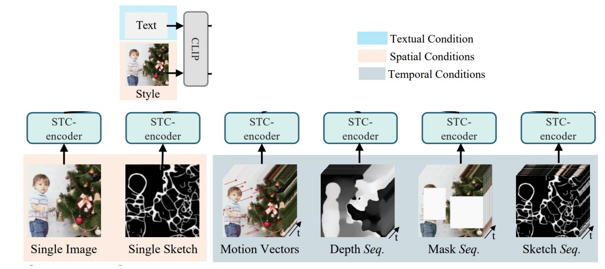
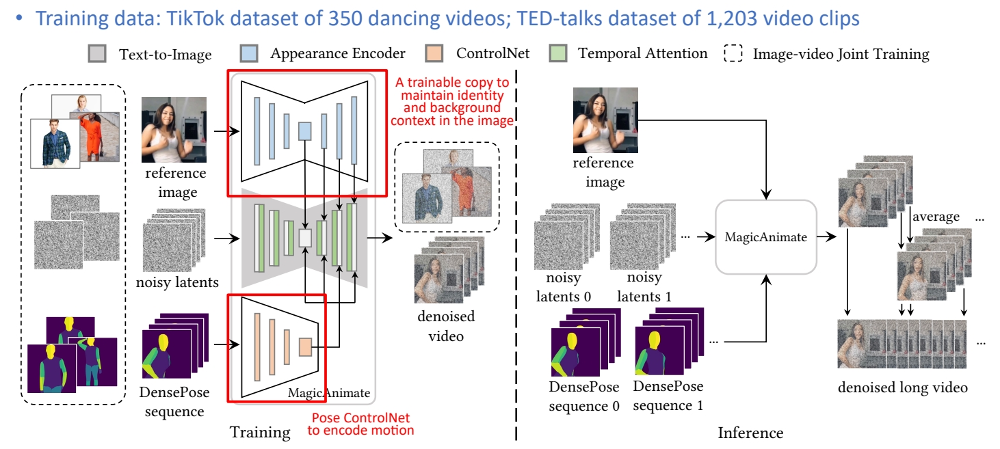
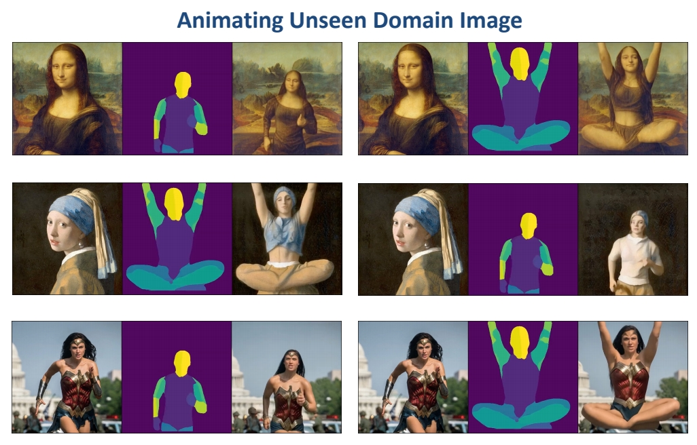
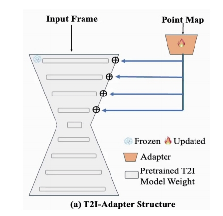
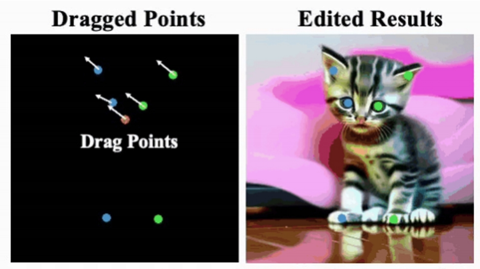
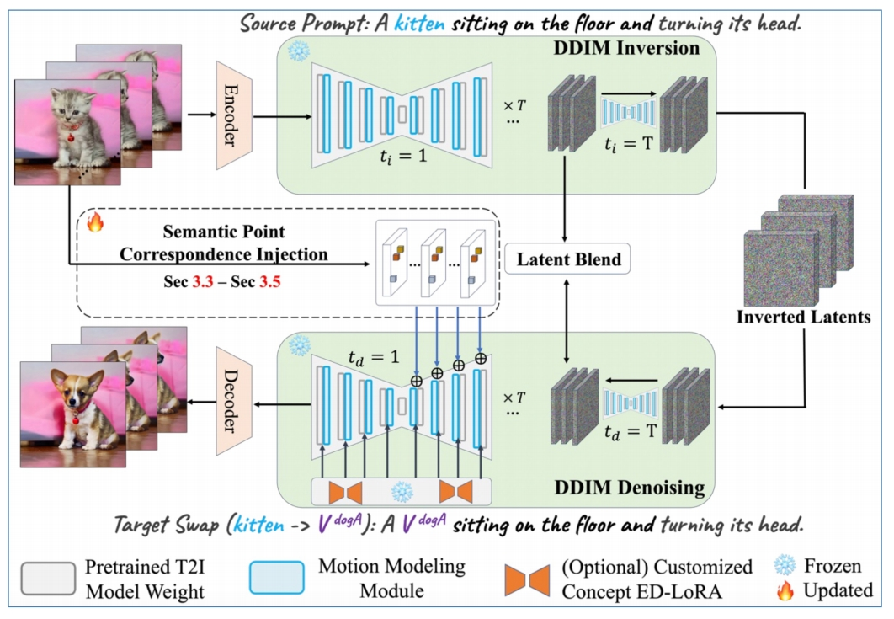

P188
3 Video Editing
3.3 Controlled Edifng (depth/pose/point/ControlNet)
P189
P190
Depth Control
✅ RunwayML 主要做的是 style transfer, 强制加入 depth 作为 condition, 因此可移植性非常高。
P191
✅ MIDS 是已有的深度估计模型。
P192
Use MiDaS to offer depth condition
Depth estimating network
Ranftl et al., “Towards Robust Monocular Depth Estimation: Mixing Datasets for Zero-shot Cross-dataset Transfer,” TPAMI 2022.
✅ 深变信息 Encode 成 latent code, 与 noise conca 到一起。
P193
Gen-1
Framewise depth-guided video editing
- Inflate Stable Diffusion to a 3D model, finetune on pretrained weights
- Insert temporal convolution/attention layers
- Finetune to take per-frame depth as conditions
 |  |
✅ 特点：(1) 不需要训练。 (2) 能保持前后一致性。
P60
Gen-1
- Transfer the style of a video using text prompts given a “driving video”

Esser et al., "Structure and Content-Guided Video Synthesis with Diffusion Models", arXiv 2023
P61
Gen-1
- Condition on structure (depth) and content (CLIP) information.
- Depth maps are passed with latents as input conditions.
- CLIP image embeddings are provided via cross-attention blocks.
- During inference, CLIP text embeddings are converted to CLIP image embeddings.

✅ 用 depth estimator 从源视频提取 struct 信息，用 CLIP 从文本中提取 content 信息。
✅ depth 和 content 分别用两种形式注入。depth 作为条件，与 lantent concat 到一起。content 以 cross attention 的形式注入。
P194
Pix2Video
Framewise depth-guided video editing
- Given a sequence of frames, generate a new set of images that reflects an edit.
- Editing methods on individual images fail to preserve temporal information.
Ceylan et al., "Pix2Video: Video Editing using Image Diffusion", arXiv 2023
✅ 没有 3D diffusion model，只是用 2D diffusion model 生成多张图像并拼成序列。关键在于保持时序的连续性。
- Leverage a pretrained per-frame depth-conditioned Stable Diffusion model to edit frame by frame, to maintain motion consistency between source video and edited video
- No need for training/finetuning

P195
How to ensure temporal consistency?
Obtain initial noise from DDIM inversion
✅ (1) 用每一帧的原始图像的 inversion 作为 init noise.
✅ (2) 下一帧的生成会引用上一帧的 latent.
✅ (3) 生成的中间结果上也会有融合。
P196
Self-Attention injection:
Inject self-attention features from the previous frame in U-Net for generating the current frame

- Use the latent of the previous frame as keys and values to guide latent update of the current frame


✅ reconstruction guidance，使生成的 latent code 与上一帧接近。
✅ (1) 使用 DDIM inversion 把图像转为 noise．
✅ (2) 相邻的 fram 应 inversion 出相似的 noise．
✅ 使用 self-attention injection 得到相似的 noise.
P197
Result

P198

P199
ControlNet / Multiple Control
P200
ControlVideo (Zhang et al. 2023)
ControlNet-like video editing
- Input structural conditions through ControlNet

Zhang et al., “ControlVideo: Training-free Controllable Text-to-Video Generation,” arXiv 2023.
✅ 使用预训练的 stable diffusion, 无需额外训练。
✅ contrd net 是与 stable diffusion 配对的。
✅ contrd net 以深度图或边缘图为条件，并在时间维度上 embed 以此得到的Z。与原始视频有比较好的对应关系，但仍存在 temporal consistency 问题。
P201
ControlVideo (Zhang et al. 2023)
ControlNet-like video editing
- Use pretrained weights for Stable Diffusion & ControlNet, no training/finetuning
- Inflate Stable Diffusion and ControlNet along the temporal dimension
- Interleaved-frame smoothing during DDIM sampling for bever temporal consistency

Zhang et al., “ControlVideo: Training-free Controllable Text-to-Video Generation,” arXiv 2023.
✅ 解决 temporal consistency 问题，方法：
✅ 在每个 timestep，让不同帧成为前后两帧的融合。
❓ control net 与 diffusion medel 是什么关系？
P202
ControlVideo (Zhang et al. 2023)
ControlNet-like video editing
- Use pretrained weights for Stable Diffusion & ControlNet, no training/finetuning
- Inflate Stable Diffusion and ControlNet along the temporal dimension
- Interleaved-frame smoothing during denoising for better temporal consistency

Zhang et al., “ControlVideo: Training-free Controllable Text-to-Video Generation,” arXiv 2023.
P203
ControlVideo (Zhang et al. 2023)
ControlNet-like video editing

Zhang et al., “ControlVideo: Training-free Controllable Text-to-Video Generation,” arXiv 2023.
P207
✅ 除了 control net, 还使用光流信息作为引导。
✅ Gop：Group of Pictures.
P208
VideoControlNet
Optical flow-guided video editing; I, P, B frames in video compression

Hu et al., “VideoControlNet: A Motion-Guided Video-to-Video Translation Framework by Using Diffusion Model with ControlNet,” arXiv 2023.
✅ 内容一致性，适用于 style transfer, 但需要对物体都较大编辑力度时不适用(例如编辑物体形状)。
P209
✅ 也是control net 形式，但用到更多控制条件。
P210
CCEdit
Mulemodal-guided video edieng

Feng et al., “CCEdit: Creative and Controllable Video Editing via Diffusion Models,” arXiv 2023.
✅ 使用了更多控制信息，并把它们 combine 到一起。
P211
VideoComposer
Image-, sketch-, motion-, depth-, mask-controlled video editing
Video Editing based on Various Conditions

Wang et al., “VideoComposer: Compositional Video Synthesis with Motion Controllability,” arXiv 2023.
✅ 每个 condition 进来，都过一个 STC-Encoder, 然后把不同 condition fuse 到一起，输入到 U-Net.
P212
VideoComposer
Image-, sketch-, motion-, depth-, mask-controlled video editing
• Spako-Temporal Condikon encoder (STC-encoder): a unified input interface for condikons

Wang et al., “VideoComposer: Compositional Video Synthesis with Motion Controllability,” arXiv 2023.
P214
ControlNet- and Depth-Controlled Video Editing: More Works
| MagicProp (Yan et al.) “MagicProp: Diffusion-based Video Editing via Motion-aware Appearance Propagation,” arXiv 2023. | |
 | Make-Your-Video (Xing et al.) “Make-Your-Video: Customized Video Generation Using Textual and Structural Guidance,” arXiv 2023. |
 | Control-A-Video (Lorem et al.) “Control-A-Video: Controllable Text-to-Video Generagon with Diffusion Models,” arXiv 2023. |
| MagicEdit (Liew et al.) “MagicEdit: High-Fidelity and Temporally Coherent Video Editing,” arXiv 2023. | |
 | EVE (Chen et al.) “EVE: Efficient zero-shot text-based Video Editing with Depth Map Guidance and Temporal Consistency Constraints,” arXiv 2023. |
P215
Pose Control
P216
DreamPose
Pose- and image-guided video generation
Input: image \(\quad \) Input: pose sequence \(\quad \) Output: Video
Karras et al., “DreamPose: Fashion Image-to-Video Synthesis via Stable Diffusion,” arXiv 2023.
P218
MagicAnimate
Pose- and image-guided video generaeon
Challenges
- Flickering video
- Cannot maintain background
- Short video animation results
Possible Cause
- Weak appearance preservation due to lack of temporal modeling
Xu et al., “MagicAnimate: Temporally Consistent Human Image Animation using Diffusion Model,” arXiv 2023.
✅ 把 pose control net 加到核心的 U-Net 生成。
✅ 把原始 U-Net fix, copy- 分可以 train 的 U-Net.
✅ 输入：reference image, 两个 U-Net 在部分 layer 进行结合达到前景 appearance 和背景 appeorance 的 Encode 推断时输入多个 Sequence, 可以生成 long video.
P219
MagicAnimate
Pose- and image-guided video generation

Xu et al., “MagicAnimate: Temporally Consistent Human Image Animation using Diffusion Model,” arXiv 2023.
P220
MagicAnimate
Pose- and image-guided video generation

Xu et al., “MagicAnimate: Temporally Consistent Human Image Animation using Diffusion Model,” arXiv 2023.
P223
MagicAnimate
Pose-guided video generation

Xu et al., “MagicAnimate: Temporally Consistent Human Image Animation using Diffusion Model,” arXiv 2023.
P224
Video Editing Under Pose Guidance: More Works
 | Dancing Avatar (Qin et al.) Pose-guided video editing “Dancing avatar: Pose and text-guided human motion videos synthesis with image diffusion model,” arXiv 2023. |
 | Follow Your Pose (Ma et al.) Pose-guided video editing “Follow Your Pose: Pose-Guided Text-to-Video Generation using Pose-Free Videos,” arXiv 2023. |
 | DisCo (Wang et al.) Pose-guided video editing “Disco: Disentangled control for referring human dance generation in real world,” arXiv 2023. |
P225
Point-Control
P226
VideoSwap
Customized video subject swapping via point control
Problem Formulation
- Subject replacement: change video subject to a customized subject
- Background preservation: preserve the unedited background same as the source video

Gu et al., “VideoSwap: Customized Video Subject Swapping with Interactive Semantic Point Correspondence,” 2023.
✅ 要求，背景一致，动作一致，仅替换前景 content.
✅ 因比对原视频提取关键点，基于关键点进行控制。
P227
VideoSwap
Customized video subject swapping via point control
Motivation
- Existing methods are promising but still often motion not well aligned
- Need ensure precise correspondence of semantic points between the source and target

Gu et al., “VideoSwap: Customized Video Subject Swapping with Interactive Semantic Point Correspondence,” 2023.
✅ (1) 人工标注每一帧的 semantic point．（少量标注，8帧）
✅ (2) 把 point map 作为 condition．
P228
VideoSwap
Customized video subject swapping via point control
Empirical Observations
- Question: Can we learn semantic point control for a specific source video subject using only a small number of source video frames
- Toy Experiment: Manually define and annotate a set of semantic points on 8 frame; use such point maps as condition for training a control net, i.e., T2I-Adapter.

Gu et al., “VideoSwap: Customized Video Subject Swapping with Interactive Semantic Point Correspondence,” 2023.
✅ 实验证明，可以用 semantic point 作为 control．
✅ 结论：T2I 模型可以根据新的点的位置进行新的内容生成。
P229
VideoSwap
Customized video subject swapping via point control
Empirical Observations
- Observation 1: If we can drag the points, the trained T2I-Aapter can generate new contents based on such dragged new points (new condition) → feasible to use semantic points as condition to control and maintain the source motion trajectory.

Gu et al., “VideoSwap: Customized Video Subject Swapping with Interactive Semantic Point Correspondence,” 2023.
✅ 也可以通过拉部分点改变车的形状。
P230
VideoSwap
Customized video subject swapping via point control
Empirical Observations
- Observation 2: Further, we can drag the semantic points to control the subject’s shape

Gu et al., “VideoSwap: Customized Video Subject Swapping with Interactive Semantic Point Correspondence,” 2023.
✅ 虚线框为类似于 control net 的模块，能把 semanti point 抽出来并输入到 denoise 模块中。
✅ Latent Blend 能更好保留背景信息。
✅ 蓝色部分为 Motion layer.
P231
VideoSwap
Customized video subject swapping via point control

Framework
-
Motion layer: use pretrained and fixed AnimateDiff to ensure essential temporal consistency
-
ED-LoRA \(_{(Mix-of-Show)}\): learn the wconcept to be customized
-
Key design aims:
- Introduce semantic point correspondences to guide motion trajectory
- Reduce human efforts of annotating points
Gu et al. “VideoSwap: Customized Video Subject Swapping with Interactive Semantic Point Correspondence,” 2023.
Gu et al. “Mix-of-Show: Decentralized Low-Rank Adaptation for Multi-Concept Customization of Diffusion Models.” NeurIPS, 2023.
P232
VideoSwap
Customized video subject swapping via point control
Step 1: Semantic Point Extraction
- Reduce human efforts in annotating points
- User define point at one keyframe
- Propagate to other frames by point tracking/detector
- Embedding

Gu et al., “VideoSwap: Customized Video Subject Swapping with Interactive Semantic Point Correspondence,” 2023.
✅ 什么是比较好的 Semantic point 的表达？
P233
VideoSwap
Customized video subject swapping via point control
Methodology – Step 1: Semantic Point Extraction on the source video
- Reduce human efforts in annotating points
- Embedding
- Extract DIFT embedding (intermediate U-Net feature) for each semantic point
- Aggregate over all frames

Gu et al., “VideoSwap: Customized Video Subject Swapping with Interactive Semantic Point Correspondence,” 2023.
❓ Embedding, 怎么输人到网络中？
✅ 网络参数本身是 fix 的，增加一些小的 MLP, 把 Embeddin 转化为不同的 scales 的 condition map, 作为 U-Net 的 condition.
P234
VideoSwap
Customized video subject swapping via point control
Methodology – Step 2: Semantic Point Registration on the source video
- Introduce several learnable MLPs, corresponding to different scales
- Optimize the MLPs
- Point Patch Loss: restrict diffusion loss to reconstruct local patch around the point
- Semantic-Enhanced Schedule: only sample higher timestep (0.5T, T), which prevents overfitting to low-level details

Gu et al., “VideoSwap: Customized Video Subject Swapping with Interactive Semantic Point Correspondence,” 2023.
✅ 有些场景下需要去除部分 semanfic point, 或移动 point 的位置。
P235
VideoSwap
Customized video subject swapping via point control
Methodology
- After Step1 (Semantic Point Extraction) and Step2 (Semantic Point Registration), those semantic points can be used to guide motion
- User-point interaction for various applications

Gu et al., “VideoSwap: Customized Video Subject Swapping with Interactive Semantic Point Correspondence,” 2023.
✅ 在一帧上做的 semantic point 的移动，迁移到其它帧上。
P236
VideoSwap
Customized video subject swapping via point control
Methodology
- How to drag point for shape change?
- Dragging at one frame is straightforward, propagating drag displacement over time is non-trivial, because of complex camera motion and subject motion in video.
- Resort to canonical space (i.e., Layered Neural Atlas) to propagate displacement.

Gu et al., “VideoSwap: Customized Video Subject Swapping with Interactive Semantic Point Correspondence,” 2023.
P237
VideoSwap
Customized video subject swapping via point control
Methodology
- How to drag point for shape change?
- Dragging at one frame is straightforward, propagating drag displacement over time is non-trivial because of complex camera motion and subject motion in video.
- Resort to canonical space (i.e., Layered Neural Atlas) to propagate displacement.

Gu et al., “VideoSwap: Customized Video Subject Swapping with Interactive Semantic Point Correspondence,” 2023.
P238
VideoSwap
Customized video subject swapping via point control

Gu et al., “VideoSwap: Customized Video Subject Swapping with Interactive Semantic Point Correspondence,” 2023.
P239
VideoSwap
Customized video subject swapping via point control

Gu et al., “VideoSwap: Customized Video Subject Swapping with Interactive Semantic Point Correspondence,” 2023.
✅ point contrd 可以处理形变比较大的场景。
P240
VideoSwap
Customized video subject swapping via point control
Qualitative Comparisons to previous works
- VideoSwap can support shape change in the target swap results, leading to the correct identity of target concept.
Gu et al., “VideoSwap: Customized Video Subject Swapping with Interactive Semantic Point Correspondence,” 2023.
P241
✅ 重建 3D 可以解决时间一致性问题。
本文出自CaterpillarStudyGroup，转载请注明出处。
https://caterpillarstudygroup.github.io/ImportantArticles/